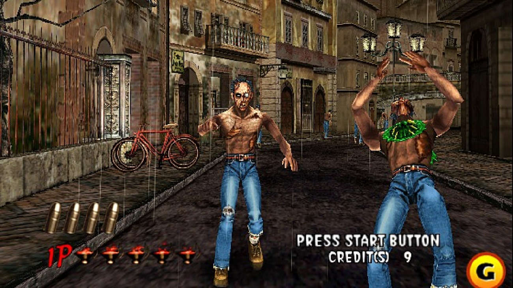

Shooters
Un shooter o tambien conocido como videojuego de disparos conforma un género que engloba un amplio número de subgéneros que tienen la característica común de permitir controlar un personaje que, por norma general, dispone de un arma que puede ser disparada a voluntad. Pertenecen al género de acción.

Subgeneros del shooter
•Videojuegos de disparos en primera persona
Los videojuegos de disparos en primera persona (también conocidos como FPS o first person shooters) se caracterizan por tener un estilo como el de los videojuegos Counter-Strike, Wolfenstein 3D, Blakestone: Aliens of gold, Halo, Doom, Quake, Half-Life, GoldenEye 007, Battlefield, Medal of Honor, TimeSplitters, Killzone, Titanfall, Red Steel y Call of Duty. En los que lo que aparece en pantalla simula la visión de los ojos del personaje controlado por el jugador.
•Videojuegos de disparos en tercera persona
Los videojuego de disparos en tercera persona tienen un estilo como los videojuegos de la saga Tomb Raider, Max Payne, Gears of War, Dark Sector, Red Dead Revolver, Splinter Cell, S4 League y Grand Theft Auto. Es un género en el cual el personaje es visto desde una perspectiva en tercera persona.
•Shoot 'em up

Los shoot 'em ups son un subgénero muy específico de los shooters, donde el jugador tiene un control limitado sobre su movimiento: por ejemplo, un shooter 2D en el que la pantalla se mueve progresivamente hacia adelante, impidiendo al jugador retroceder, como Metal Slug.
Shooter sobre raíles
El término "sobre raíles" suele describir aquellos juegos en los que el jugador no tiene control sobre el movimiento, moviéndose el personaje a través de una serie de "raíles" o caminos prefijados. El juego se limita a disparar en perspectiva de primera o tercera persona. Muchos juegos de pistolas pertenecen al género "sobre raíles", dirigiendo al jugador por un grupo de escenarios mientras una serie de objetivos a los que disparar van apareciendo en la pantalla. En este género podrían encuadrarse videojuegos como Star Fox o los shooters de la serie The House Of The Dead.
Run-and-gun
Un shooter run-and-gun es una combinación de juego plataformas y scrolling shooter. Este tipo de juego se caracteriza por el hecho de manejar a un personaje que se desplaza por plataformas mientras dispara a los enemigos en múltiples direcciones. Algunos juegos conocidos de este género son Duke Nukem, Contra, Megaman y Metal Slug.
Galería de tiro

Algunos pueden ser jugados con pistola (periférico), aunque la mayoría también se pueden jugar con el mando tradicional y un puntero en la pantalla que indica el lugar donde se desea disparar. En sus orígenes, estos juegos fueron diseñados en una perspectiva en primera persona, con ataques enemigos que provenían de todos lados, dañado a la pantalla (simulando el daño al jugador). A medida que se iba dejando de lado el uso de los mandos-pistola, aparecía un personaje en pantalla (normalmente en la parte inferior) que representaba al jugador, pudiendo este moverse y esquivar los ataques enemigos mientras respondía a ellos. La mayoría de estos shooter utilizan un scrolling horizontal para indicar la progression en el nivel, mientras que los enemigos aparecen en la pantalla a ráfagas, en lugares predefinidos (normalmente en el fondo o los laterales de los escenarios). A medida que se han ido extendiendo los juegos con pistola, haciendo un uso de escenarios en 3D (como las sagas Time Crisis o The House of the Dead), este tipo de juegos ha ido decreciendo en producción y popularidad, aunque todavía existen fanes que siguen jugando a ellos.